HEROIC LEVELS
Abandon all hope, ye who enter here. Similar to ordinary demons but much stronger and more intelligent, heroic demons are more than a match for the toughest heroes.
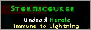
Median XL features four heroic areas:
Act 1 Mausoleum (Burial Grounds)
Act 2 Stony Tomb Level 1 (Rocky Waste)
Act 5 Icy Cellar (Ancients' Way)
Each of the three areas contains the same 20 heroic monster types. You may
want to choose the area that suits your character build the most.
Act 1 Cow Level (Rogue Encampment)
Meet invisible cow ninjas, bovine summoners and other figments of your fever dreams after a bad case of food poisoning in
the Cow Level!
HEROIC BOSSES
Each heroic area is protected by its own guardian and one appears only when its shrine is disturbed. The area's heroic boss may randomly appear in the area, or he may not... Beware, heroic bosses are among the hardest encounters in Median XL.
All heroic bosses are protected by an invulnerability shield. This shield is nearly impossible to break with mortal magic but will occasionally fail and drop a random immunity, though this still leaves the boss with high resistance to this element. Use these rare opportunities well.
|
1/6 Bull Prince Rodeo 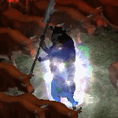 Level |
Location See THIS PAGE for more information on how to enter the Cow Level. Lore Strategy Reward 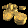
Fool's Gold
Keep in Inventory to Gain Bonus Required Level: 100 +(-10 to 38) to all Attributes Total Character Defense Plus (11 to 15)% 3% Reanimate as: Random monster (including Elites) -75% Less Gold from Monsters (31 to 40)% Better Chance of Getting Magic Items See THIS PAGE for the list of reanimates. Drop Bias See THIS PAGE for more information about the Unique Mystic Orbs. |
|
2/6 Quov Tsin 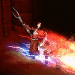 Level |
Location Lore Strategy Reward
Silver Seal of Ureh
Keep in Inventory to Gain Bonus Required Level: 120 +(21 to 30) Energy Factor to Spell Damage +1 to All Skills +(41 to 50) to Strength +(41 to 50) to Dexterity +(41 to 50) to Vitality +(41 to 50) to Energy (21 to 25)% Bonus to Summoned Minion Damage (11 to 15)% Bonus to Summoned Minion Resistances 2% chance to drop a trophy on Destruction difficulty. Cube the trophy with the charm for a small bonus.
Quov Tsin Trophy
Cube with the Silver Seal of Ureh... +15% to Spell Damage |
|
3/6 Belial 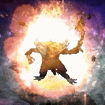 Level |
Location Once you enter, you cannot go back trough the stairs. Lore Strategy Reward 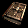
Book of Lies
Keep in Inventory to Gain Bonus Required Level: 60 +(51 to 500) to Life +(51 to 500) to Mana Transmute the Book of Lies with your Book of Summoning to add to it the power of Dark Summoning.
Book of Lies + Book of Summoning → Book of Lies with added bonuses
This upgrade recipe adds the following bonuses: |
|
4/6 Athulua 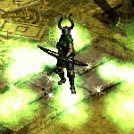 Level |
Location Lore Strategy Reward 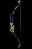
Deity's Bow
This blessed bow might be used for unique recipes to unleash Divine Power Athulua's Blessing
Any Unique Bow + Deity's Bow → Unique Bow, may add blessing
This recipe has 25% chance to add the following blessing: Valkyrie's Prime
Cursed Crystal + Unknown Skull 1 → Blessed Crystal
Blessed Crystal + Unknown Skull 2 → Book of the Wise
Unknown Skull 1 + Unknown Skull 2 → Mystic Shard
See THIS PAGE for more information about the Cursed Crystal. Using these 3 reagents and other listed in this table, and transmuting them with the appropriate character, you can get all the Tokens.
Once you've gathered all 6 Tokens and the Deity's Bow you can use this recipe.
Deity's Bow + Tokens of Pain, Suffering, Hatred, Terror, Destruction & Lies → Valkayrie's Prime
It assembles the mighty Amazon bow invested with powers from Athulua herself.
Valkayrie's Prime
Sacred Bow Two-Hand Damage: 850 to 1540 Required Dexterity: 666 Required Strenght: 666 Required Level: 120 Adds Strength Damage Bonus: (102/256 per Strength)% Adds Dexterity Damage Bonus: (102/256 per Dexterity)% 100% Chance to Cast level 1 Athulua's Wrath when you Die 15% Chance to cast level 15 Time Wave when you Kill an Enemy +1 to All Skills +200% Enhanced Damage Adds 400-1000 Damage Adds 111-666 Magic Damage Adds 111-666 Fire Damage Adds 111-666 Lightning Damage Adds 111-666 Cold Damage +10 to Sky Siege |
||||||||||||||||||||||||||||||||||||||||


|
5/6 Astrogha 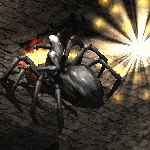 Level |
Location Lore Strategy Reward 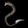
Astrogha's Venom Stinger
Keep in Inventory to Gain Bonus Required Level: 120 +1 to All Skills +(100 to 500) to Life Poison Length Reduced by 50% 2% chance to drop a trophy on Destruction difficulty. Cube the trophy with the charm for a small bonus.
Astrogha Trophy
Cube with the Astrogha's Venom Stinger... -5% to All Enemy Resistances Warning! Due to a bug with the way Diablo II handles champions, there is a chance Astrogha may spawn as a boss pack with several copies of himself as minions. When you see a mass of doom spiders, run for your life and restart the game. |
|
6/6 Kabraxis 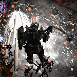 Level |
Location Lore Strategy Reward
Soul of Kabraxis
Keep in Inventory to Gain Bonus Required Level: 100 50% Chance to cast level 49 Trinity Nova when you Die +1 to All Skills 2% chance to drop a trophy on Destruction difficulty. Cube the trophy with the charm for a small bonus.
Kabraxis Trophy
Cube with the Soul of Kabraxis... 2% Reanimate as: Random monster (including Elites) See THIS PAGE for the list of reanimates. Elemental seals
Soul of Kabraxis + 5x Great Gems (different) → Soul of Kabraxis with added bonuses
This upgrade recipe adds the following bonuses: +(0 to 5)% to Maximum Cold Resist +(0 to 5)% to Maximum Lightning Resist +(0 to 5)% to Maximum Poison Resist +20 Required Level |